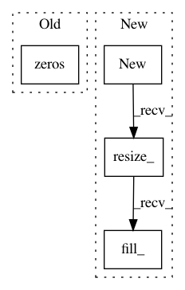

a19f102c65b943a668616df5f3b46cfb4376e04c,allennlp/modules/augmented_lstm.py,AugmentedLstm,forward,#AugmentedLstm#Any#Any#,69
Before Change
total_timesteps = sequence_tensor.size()[1]
output_accumulator = Variable(torch.zeros([batch_size, total_timesteps, self.hidden_size]))
if initial_state is None:
full_batch_previous_memory = Variable(torch.zeros([batch_size, self.hidden_size]))
full_batch_previous_state = Variable(torch.zeros([batch_size, self.hidden_size]))
else:
full_batch_previous_state = initial_state[0].squeeze(0)
After Change
output_accumulator = Variable(sequence_tensor.data.new()
.resize_(batch_size, total_timesteps, self.hidden_size).fill_(0))
if initial_state is None:
full_batch_previous_memory = Variable(sequence_tensor.data.new()
.resize_(batch_size, self.hidden_size).fill_(0))
full_batch_previous_state = Variable(sequence_tensor.data.new()
.resize_(batch_size, self.hidden_size).fill_(0))
else:
In pattern: SUPERPATTERN
Frequency: 3
Non-data size: 4
Instances
Project Name: allenai/allennlp
Commit Name: a19f102c65b943a668616df5f3b46cfb4376e04c
Time: 2017-08-07
Author: markn@allenai.org
File Name: allennlp/modules/augmented_lstm.py
Class Name: AugmentedLstm
Method Name: forward
Project Name: cornellius-gp/gpytorch
Commit Name: 5491a85b8a65407feb97055ebd5ee39169de7e6b
Time: 2017-09-21
Author: jrg365@cornell.edu
File Name: gpytorch/utils/toeplitz.py
Class Name:
Method Name: sym_toeplitz_derivative_quadratic_form
Project Name: cornellius-gp/gpytorch
Commit Name: 531bc80bae88a5f240583bc19de9fc4f65e675a5
Time: 2017-08-01
Author: jrg365@cornell.edu
File Name: gpytorch/math/functions/interpolated_toeplitz_gp_marginal_log_likelihood.py
Class Name: InterpolatedToeplitzGPMarginalLogLikelihood
Method Name: backward